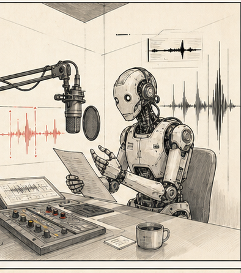

голос
Подготавливаем текст и получаем озвучку для ролика, подводки, подкаста или внутреннего демо.
Первая часть урока посвящена аудио: озвучке, подкастам, музыкальной подложке и чистке звука. Вторая часть посвящена редакторской работе с СИИ: как быстро собрать дайджест, план выпуска и рабочее задание для команды.

Подготавливаем текст и получаем озвучку для ролика, подводки, подкаста или внутреннего демо.
На основе документов, статей и заметок собираем черновой подкастовый выпуск или audio overview.
Создаем музыкальную подложку, которая поддерживает речь и не перегружает подачу.
Улучшаем качество голоса, если исходная запись шумная, тихая или требует быстрой доработки.
Быстрый маршрут для подкастового разбора источников и подготовки audio overview. Бесплатный старт.
Enhance Speech помогает быстро улучшить качество голоса. Удобно для учебных и рабочих примеров.
Озвучка, дубляж и синтетические голоса. Есть бесплатный старт, для регулярной работы обычно требуется платный тариф.
Создание музыки и подложки. Есть бесплатный режим и платные тарифы для расширенной работы.
Сервис для быстрого создания AI-подкастов и разговорных форматов с голосами.
Дополнительный маршрут для TTS и тестов, в том числе как альтернатива западным сервисам.
Подходит для синтетической озвучки, demo voiceover и дубляжа.
NotebookLM дает быстрый audio overview по источникам, Wondercraft помогает собрать более управляемый выпуск.
Suno используем для музыкальной подложки, MiniMax можно показать как дополнительный маршрут для голоса и тестов.
Сделай текст для озвучки по материалу.
Вход:
- исходный текст / Source Map / транскрипт;
- формат: подводка / voiceover / podcast fragment / Telegram audio;
- длина: 45-90 секунд;
- голос: спокойный, ясный, редакторский.
Сделай:
1. Главный смысл.
2. Факты, которые нельзя менять.
3. Hook на 1-2 фразы.
4. Текст для озвучки.
5. Имена, цифры, названия и ударения, которые надо проверить.
6. Где ведущему лучше сказать своими словами.
Правила:
- не добавляй новые факты;
- не драматизируй;
- не пиши как официальный пресс-релиз;
- пиши так, чтобы это можно было произнести вслух.Instrumental only. No vocals. No lyrics.
Create a professional editorial music bed for spoken narration.
Purpose: support voice, not compete with it.
Mood: restrained, modern, focused, credible.
Tempo: medium, around 100 BPM.
Structure: quiet intro, steady main section, light development, clean ending.
Instrumentation: soft electronic drums, controlled bass pulse, minimal synth motif, light atmospheric texture.
Mix: voice-first, no harsh highs, no huge lows, no dramatic peaks, no distracting melody.
Avoid: epic trailer, pop song, sentimentality, comedy, aggressive percussion, orchestral excess.Пример озвучки: дикция, темп, ударения и общее качество подачи.
Пример подложки: насколько музыка поддерживает речь и не мешает восприятию текста.
Сравнение бесплатного и платного режима на одном типе задачи.
смыслозвучка не добавила фактов, которых не было в исходнике
произношениеимена, география, числа и ударения не развалились
ритмтекст удобно читать вслух, он не звучит как письменный документ
музыкаподложка поддерживает речь и не перегружает восприятие
лимитыесли сервис бесплатный, сразу фиксируем ограничения и рабочие границы
Порядок работы такой: сначала браузер, затем проект с правилами и промптами, и только после этого agent route для тех, кто отвечает за hub.
Вставили материалы, получили дайджест, план и рабочее задание. Это дает понятный результат уже на первом шаге.
Сохраняем правила, промпты, примеры, ограничения и удачные формулировки. Так появляется рабочая система.
Подключаем только для тех, кто будет вести hub, обновлять правила и поддерживать повторяемый процесс.
Новости, транскрипты, ссылки, релизы, комментарии, идеи редакции.
Что важно, что подтверждено, где риск и что стоит взять в работу.
Формат, канал, приоритет, дедлайн, ответственный и human gate.
Корреспонденту, SMM, монтажеру, дизайнеру или ведущему.
События, происшествия, решения, заявления, официальные сообщения.
Интервью, длинные записи, таймкоды, куски прошлых выпусков, съемочный материал.
Комментарии, жалобы, вопросы, повторяющиеся боли и реакции после публикации.
Бэклог тем, рубрики, идеи продюсера, график съемок, задачи на неделю.
Пресс-релизы, таблицы, сайты, согласованные источники, внутренние справки и отчеты.
Предыдущие публикации, охваты, ошибки, повторы, что стоит переупаковать.
Собери редакторский дайджест из материалов ниже.
Материалы могут быть: новости, ссылки, релизы, комментарии, идеи, транскрипты, планы.
Не пиши публикацию. Не придумывай факты.
Для каждого пункта укажи:
1. Что это за тема простыми словами.
2. Откуда взято: ссылка / источник / кто принес.
3. Что подтверждено.
4. Что не подтверждено.
5. Почему это может быть важно аудитории.
6. Риск: факт, контекст, юридический, репутационный.
7. Что проверить человеку.
8. Возможный формат: сайт / Telegram / видео / визуал / аудио.
9. Следующий шаг: взять в работу / уточнить / отложить / не брать.
В конце дай top-5 тем и вопросы редактору.На основе дайджеста собери план выпуска на неделю.
Для каждой темы укажи:
1. Приоритет: высокий / средний / низкий.
2. Формат: новость / объяснение / видео / карточки / подводка / аудио.
3. Канал: сайт / Telegram / соцсети / эфир / внутренний канал.
4. Почему это нужно аудитории.
5. На какой source опираемся.
6. Что нужно проверить до публикации.
7. Ответственный: редактор / корреспондент / SMM / монтажер / дизайнер.
8. Дедлайн.
9. Human gate: кто принимает финальное решение.
В конце раздели:
- можно делать сейчас;
- нужно уточнить;
- не берем;
- можно автоматизировать позже.Фактические запреты, юридические ограничения, тональность, human gate.
Дайджест, план, ТЗ, озвучка, Source Map и обновление hub.
Нужны хорошие и проблемные примеры, чтобы команда понимала границу качества.
Все лежит в одном месте, а не в десяти чатах, заметках и голосовых.
Собери редакционное задание по выбранной теме.
Тема:
[вставьте тему из плана]
Сделай:
1. Что нужно получить на выходе.
2. Кому задача: корреспондент / SMM / монтажер / дизайнер / ведущий.
3. Какие факты и источники уже есть.
4. Чего не хватает.
5. Какие вопросы задать герою / эксперту / редактору.
6. Формат результата.
7. Ограничения: что нельзя утверждать, показывать, обещать.
8. Проверка перед выпуском.
Не пиши финальный материал. Сделай рабочее ТЗ.Промпты хранят рядом с правилами и обновляют как часть рабочего процесса.
Быстрый результат в браузере воспринимается лучше, чем сложная схема с несколькими инструментами на старте.
Полезно сохранять проблемные примеры: где модель додумала факт, упростила контекст или пропустила риск.
Для кого. Руководитель направления, продюсер, редактор-методист, владелец AI-процесса.
Что там лежит. Hub, история удачных и проблемных кейсов, правила, changelog и шаблоны обновления.
Почему не всем сразу. На старте важнее закрепить редакторский маршрут, чем перегружать команду новой средой.
Сделай предложение по обновлению AI-hub.
Дано:
- какой prompt / skill использовали;
- какой source был на входе;
- какой output получился;
- что исправил редактор;
- что повторяется не первый раз.
Собери:
1. Какой prompt / skill / gate надо обновить.
2. Evidence: 3 конкретных примера.
3. Что меняем.
4. Какой пример добавить в hub.
5. Какой warning добавить.
6. Кто owner.
7. Как проверить, что стало лучше.
Правило:
обновление опирается на примеры и повторяющиеся наблюдения.baseПодготовить одно аудио: текст для озвучки, промпт для подложки и короткую проверку результата.
оптиСобрать редакторский дайджест из 8-12 материалов и на его основе подготовить план выпуска на неделю.
проектСложить в одно место правила, три обязательных промпта и по одному хорошему и плохому примеру.
hubПодготовить одно предложение по обновлению правила: что именно надо поправить и почему.